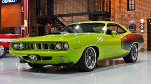
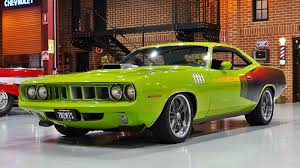

The Plymouth Barracuda is a two-door pony car that was manufactured by Chrysler Corporation from 1964 through 1974 model years. The first-generation Barracuda was based on the Chrysler A-body and was offered from 1964 until 1966. A two-door hardtop (no B-pillar) fastback design, it shared a great majority of parts and bodywork with the Plymouth Valiant, except for the distinctive wraparound rear glass. The second-generation Barracuda, though still Valiant-based, was heavily redesigned. Built from 1967 through 1969, it was available as a two-door in fastback, notchback, and convertible versions. The third generation, offered from 1970 until 1974, was based on the Chrysler E-body, exclusive to it, and the slightly larger Dodge Challenger. A completely new design, the two-door Barracuda was available in hardtop and convertible body styles.